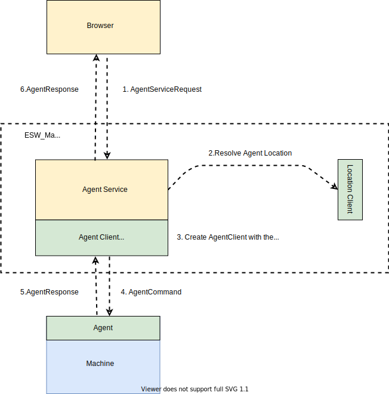

Agent Service and Agent Technical Documentation
Agent Service Introduction
The Agent Service was created to support the creation and configuration Sequence Components (and Sequencers) at run-time, a key feature of the OSW Observing Mode Oriented Architecture. Agent Service was created primarily for use by the Sequence Manager, but it provides a general service that may become more heavily used in the future.
For instance, Sequence Manager provides a provision function that takes a configuration and starts one or more Sequence Components on a set of machines. These Sequence Components can be used to run Sequencers.
The functionality of Agent Service is flexible and can be used to provide a more resilient OSW by allowing the operator of the telescope to easily respond to unexpected failures. For instance, the Sequence Manager itself can be created using the Agent Service. In this use case, a future operation’s user interface will allow the operator to start a new Sequence Manager on a backup machine in the case where the machine running the Sequence Manager has failed. This kind of scenario can in many cases reduce or eliminate OSW down-time due to machine failures.
Agent Service Implementation Details
The figure below shows the key parts of the Agent Service. Agent Service consists of a few different, collaborating parts deployed on different machines. Agent Service depends on and uses CSW Location Service. The Agent Service is a protected service using CSW Authorization and Authentication Service. Only users with an appropriate role are able to use the Agent Service functionality.

The Agent Service has the following layers and modules:
- Server: which provides the protected HTTP-based interface.
- Service implementation layer: implementation logic that includes creating the
AgentClientfor an Agent. - Agent: a second program executing on hosts, which spawns or kills a given component.
The figure shows a browser contacting the Agent Service executing on an ESW machine. It is registered in the Location Service. The browser makes an authorized HTTP call to the Agent Server. The server locates an Agent on the desired host using the CSW Location Service. It then uses the Agent’s Akka-based API to execute the request on the remote host. The Agent returns a response that is serialized by the Agent Server and returned as an AgentServiceResponse.
The following sections describe the major modules of the Agent Service. The Agent itself is described below.
Agent Service Module (esw-agent-service)
Agent Service starts with an HTTP service built using the msocket framework that is common to all ESW HTTP-based services. See msocket for more information.
Implementation of Agent Service is distributed within the following submodules:
esw-agent-service-api
All the request models and APIs related to AgentService reside within this module. This module also contains the codecs for the models. This module depends on esw-agent-akka-api module which provides all the response models.
This module is a cross-compiled project which has following parts:
- js - code which is related to scala-js (for possible future UI usage)
- jvm - code which is related only to JVM
- shared - code which can be used by both scala-js and JVM
esw-agent-service-impl
This module depends on the esw-agent-service-api module. It contains the AgentService API’s implementation which has the logic of creation of the AgentClient for a given specific Agent and calling the specific APIs of the AgentClient.
esw-agent-service-app
A command-line application exists to start the Agent Service. It is implemented in this module.
This module contains all the HTTP handlers, server wiring, and the CLI app to start the agent server.
Agent Introduction
Agent is an Akka-based actor which is used to spawn or kill a component on the machine where the Agent is running. The Agent must be started on each machine that is available to spawn components. At this time, we anticipate this will be primarily ESW machines, but any subsystem that needs to run a Sequencer on their machine (rather than on ESW machines) will also start an Agent.
Currently, Agent is able to spawn or kill the following components:
- Sequence Manager
- Sequence Component
Agent Implementation
Agent is an Akka actor which can spawn or kill a JVM process (at this time) depending on the received message. If actor receives a spawn message(e.g., SpawnSequenceManager etc), it will first check if the given component is already registered in the Location Service. If yes, it replies with a failure response indicating the component already exists; otherwise, it tries to spawn the component.
On any spawn message Agent follows following steps:
-
Checks if the component is already registered.
- If yes it returns the
Failureresponse - If not then it goes to the next step
- If yes it returns the
-
It spawns the component by starting a JVM-based process.
- If the process is spawned successfully, it returns the
Spawnedresponse - If the process fails to spawn, it returns the
Failureresponse
- If the process is spawned successfully, it returns the
The following modules are part of the Agent implementation.
Agent Module (esw-agent-akka)
The Agent is not a relatively simple module with only a few modules. Implementation of Agent is distributed within the following submodules:
esw-agent-akka-app
This module contains Agent actor’s implementation. The Akka-based API is implemented here. This module depends on Agent Client for the Agent actor’s messages and codecs.
There is also a CLI-based application for starting an Agent, and it is also implemented in this module.
Agent Client
A formal Akka-based client is provided for applications that need to send and receive messages to/from the Agent. This module defines the Agent actor messages and codecs.
Agent Client is an actor proxy to the Agent actor. It provides the API which is used internally to send messages to the Agent actor and return responses of the Agent actor to the caller.